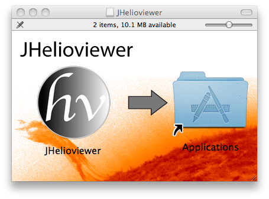

Installation Instructions
Minimum system requirements: Java 5, OpenGL 1.4, 1 GB RAM, i386 or PowerPC G5 architecture, port 8090 accessible.
Mac OS X
Simply drag the JHelioviewer icon into the Applications folder:

MS Windows
Double-click the .exe file and follow the instructions on the screen.
Linux/Multi-Platform
Make sure Java 5 or higher is installed (or download it
here) and download the JAR file. Then launch Helioviewer by typing java -Xmx1000m -jar JHelioviewer.jar in a shell in the directory where you have saved the file.
Getting started
- The first time you start JHelioviewer, it will download several platform-dependent libraries, which will take a moment.
- You are now ready to go: Browse the latest solar movie (automatically loaded at start-up), load one of the examples or use the observation panel to access images from SOHO and SDO.
- Check out the JHelioviewer Handbook.
- If you find a bug, please report it here. JHelioviewer is open source - share and enjoy!